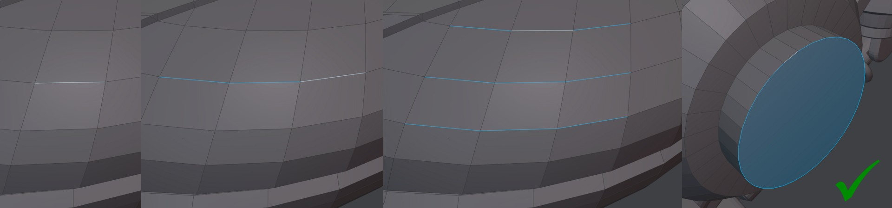
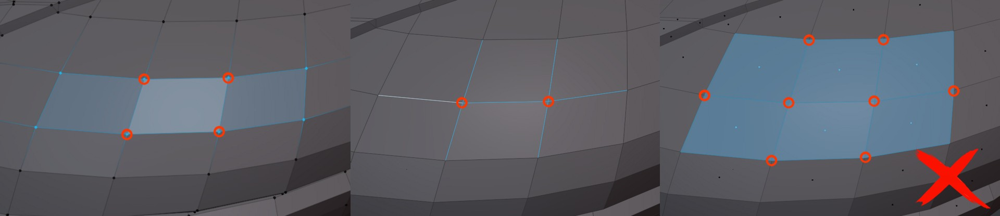

Edge Constrained Transform
Note
Only available in the Deus Ex version
shortcut ALT + R edit mode
Edge Constrained Transform is a tool capable of rotating and scaling an edit mesh selection while keeping it constrained to the connected, unselected edges. It's primarily used to adjust existing topology, without affecting the form significantly or at all.
What this isn't
This is a dedicated transform tool implementation with edge constraints. It's not a scene or mesh level constraint setting, that you can enable, and then have various blender tools behave in an edge constrained manner.
Rotation
A generalized solution for edge constrained rotation that behaves great in all topological conditions, seems very hard.
So the tool provides different constraint modes to scroll through - each with various benefits and drawbacks.
Some modes have a tendency to bend the selection the more you rotate.
The default mode Direct Plane Intersection does generally not do that, but can instead introduce some jittering, depending on the selection and transform origin.
Proximity mode, which is the most robust due to it's simplicity, will introduce bending and is generally best used as a fallback and for small rotation amounts.
Scaling
Edge constrained Scaling does not require the choice of a constraint mode.
It is scaling directionally, which means how the mouse is positioned relative to the transform origin matters and will affect the scaling, unlike when rotating.
When scaling down, and so when one approaches the transform origin, it tends to get increasingly hard to maintain the initial scaling direction.
This is why you can lock it using the ALT key, as indicated in the statusbar.
Zero Scaling
Since a lot of the time you will want to scale to 0, there is a quick way to do that - even in rotate mode - by simply holding down the SHIFT key.
Selection
- edges and edge loops
- cyclic and non-cyclic alike
- multiple, separate edge loops are supported
- avoid edge selections that cross each other, as well as multi-face selections, which tend to do the same
 single and multiple edges, edge loops or cyclic loops
 avoid crossing edges